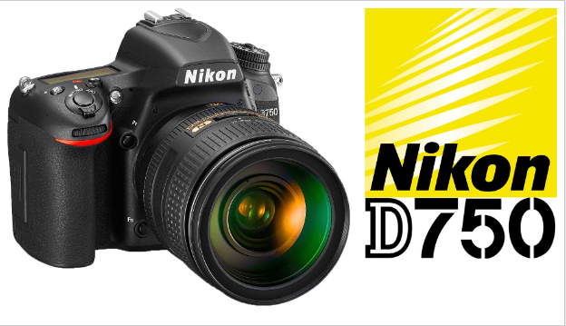
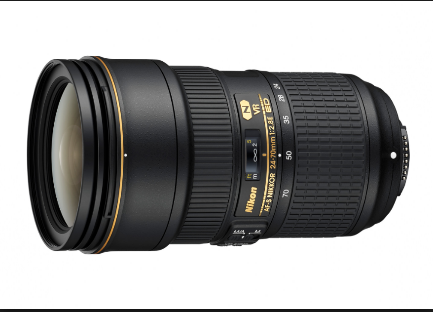
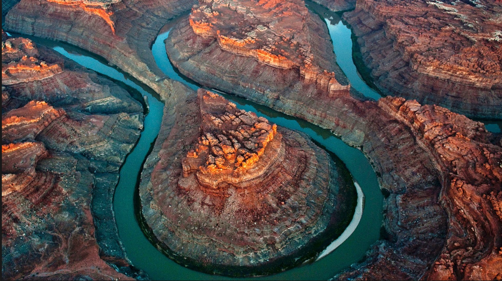

DSLR
Canon, Nikon and Pentax have all developed digital SLR cameras (DSLRs) using the same lens mounts as on their respective film SLR cameras. The digital single-lens reflex camera have largely replaced film SLR's design in convenience, sales and popularity at the start of 21st century.
Personally I have some preference for Nikon DSLR and Nikon objectives.
Objectives
It is really hard to choose one of many objectives that is on the market. My favorite objective is Nikon 24-70 mmm ebcause it has one of the best contrasts of all.
Pictures
Beatifull pictures from Earth
